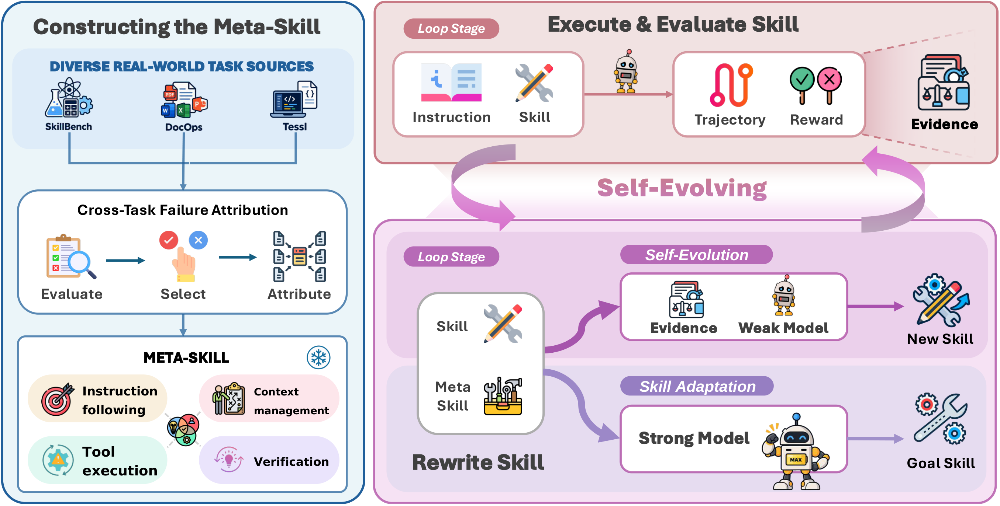
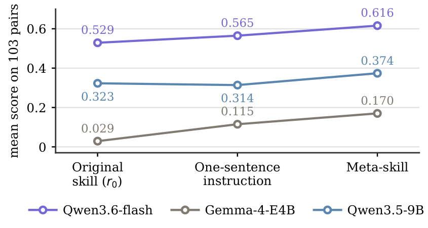

Figure 1 Skill benefit tracks base capability
The same skill library, seven executors. Click a tier region — weak, medium, or strong — to see what happens inside it, and hover any model for its exact numbers.
Figure 2 Skill adaptation in self-evolution
Five rounds of harness self-evolution: each round, the model revises its own skill from execution trajectories and verifier feedback, guided by the meta-skill. Click “Next round” to step through what changed in the skill each round.
Figure 3 The benchmark: 103 skill-sensitive pairs
From 607 task–skill pairs across three benchmarks, we screen the 103 where skills matter most. Toggle the model-score chart between all tasks and the skill-sensitive suite; click a donut slice to browse that category's tasks (the donut always describes the 103 selected pairs).
Figure 4 Method overview
We construct the meta-skill from cross-task failure attribution over four recurring failure modes — instruction following, context management, tool execution, verification — and plug it into the execute → evaluate → rewrite loop of harness self-evolution.


The meta-skill beats both the original skill and a one-sentence rewrite instruction for all three weak executors (+5.1 to +14.1 points).

Three representative executors shown; across all seven — from Gemma-4-E4B to Kimi-K2.5 — the meta-skill ends the loop +2.0 to +5.1 points above the same loop without it.